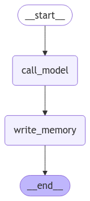

ü߆ Cápsula 4: LangMem SDK ‚Äî Memoria a Largo Plazo para Agentes
üéØ ¬øQu√© es LangMem?
LangMem es un SDK que ayuda a tus agentes a aprender y adaptarse con el tiempo mediante memoria a largo plazo. Proporciona herramientas para:
- üß© Extraer informaci√≥n importante de las conversaciones.
- ✍️ Actualizar el comportamiento del agente mediante mejoras del prompt (memoria procedimental).
- üóÇÔ∏è Mantener recuerdos persistentes (hechos, preferencias, eventos) entre sesiones.
Funciona con cualquier sistema de almacenamiento y se integra de forma nativa con la capa de memoria de LangGraph (BaseStore). Esto permite que tus agentes sean más personales, consistentes y “aprendan” de sus interacciones.
Lecturas clave
- Blog de lanzamiento del SDK: https://blog.langchain.dev/langmem-sdk-launch/
- Documentación (Key features + Quickstarts): https://langchain-ai.github.io/langmem/
- API de herramientas de memoria: https://langchain-ai.github.io/langmem/reference/tools/
üß≠ Relaci√≥n con los tipos de memoria del curso
En el curso ya vimos la diferencia entre:
- üü° Memoria a corto plazo (checkpointing dentro del hilo)
- üîµ Memoria a largo plazo (persistente entre sesiones)
Además, distinguimos 3 “sabores” de memoria a largo plazo:
- ü߆ Semántica (facts): datos y preferencias del usuario, conocimiento atemporal.
- üß™ Epis√≥dica (experiencias): ejemplos o resúmenes de interacciones pasadas.
- ⚙️ Procedimental (comportamiento): reglas y pautas del agente que evolucionan.
LangMem ofrece herramientas listas para implementar estas memorias sobre la capa de almacenamiento de LangGraph, y se complementa con la memoria de corto plazo del grafo.

Como vimos en “Long-Term Memory”, LangMem encaja como la capa que persiste recuerdos entre sesiones, mientras que
MemorySavermantiene el historial dentro de un hilo activo.
ü߆ ¬øPara qu√© podemos usarlo? (Casos de uso)
- üë§ Personalizaci√≥n: recordar preferencias del usuario (p. ej., ‚Äúprefiero modo oscuro‚Äù).
- üóÉÔ∏è Perfiles y contexto: construir y mantener fichas de usuario o equipo.
- üß≠ Recuperaci√≥n contextual: buscar recuerdos relevantes para responder mejor.
- üîÅ Mejora continua: ajustar instrucciones del agente según su rendimiento.
- ü§ù Colaboraci√≥n: compartir memorias entre agentes o por equipos (namespaces).
üì¶ Instalaci√≥n
Configura la clave del proveedor de LLM (ejemplo con Anthropic):
Almacenamiento
- Desarrollo:
InMemoryStore(en memoria, se pierde al reiniciar). - Producción: almacenes persistentes como
AsyncPostgresStoreu otros compatibles conBaseStore.
üïπÔ∏è ¬øC√≥mo se usa? (Paso a paso)
A continuación verás cómo añadir memoria persistente a un agente de LangGraph usando las herramientas de LangMem. La idea clave es que el agente pueda:
- crear/actualizar/borrar recuerdos cuando haga falta, y
- buscar recuerdos relevantes durante el chat.
1) Preparar el Store y Namespaces
Los recuerdos se guardan en un BaseStore y se organizan por namespace. Es habitual incluir un identificador de usuario para evitar mezcla de memorias.
from langgraph.store.memory import InMemoryStore
store = InMemoryStore(
index={
"dims": 1536,
"embed": "openai:text-embedding-3-small",
}
)
# El namespace final puede formarse con valores configurables a runtime.
# Ej.: ("memories", "<user-id>")
Namespaces dinámicos
Puedes usar placeholders como {langgraph_user_id} y rellenarlos con config={"configurable": {"langgraph_user_id": "user-123"}}.
2) Herramientas de memoria (LangMem)
LangMem provee dos herramientas principales:
- üõ†Ô∏è
create_manage_memory_tool(...): crea/actualiza/borra recuerdos. - üîé
create_search_memory_tool(...): busca recuerdos por similitud o filtros.
from langmem import create_manage_memory_tool, create_search_memory_tool
manage_memory = create_manage_memory_tool(
namespace=("memories", "{langgraph_user_id}"),
)
search_memory = create_search_memory_tool(
namespace=("memories", "{langgraph_user_id}"),
)
Contrato de manage_memory
content: str | None— contenido del recuerdo (crear/actualizar)id: str | None— id de un recuerdo existente (actualizar/borrar)action: Literal["create","update","delete"]— acción a realizar
3) Crear un agente con memoria
Puedes incorporar estas herramientas en un agente preconstruido de LangGraph (p. ej. ReAct) y pasarle el store:
from langgraph.prebuilt import create_react_agent
agent = create_react_agent(
model="anthropic:claude-3-5-sonnet-latest",
tools=[manage_memory, search_memory],
store=store,
)
4) Guardar y recuperar recuerdos en el “hot path”
El propio LLM decide cuándo llamar a las herramientas (no necesitas comandos especiales). Si el usuario dice algo relevante, el agente puede invocar manage_memory para guardarlo; y si necesita contexto pasado, search_memory para encontrarlo.
# El agente decide guardar una preferencia
agent.invoke({
"messages": [{"role": "user", "content": "Recuérdame en el futuro que prefiero el modo oscuro."}]
}, config={"configurable": {"langgraph_user_id": "user-123"}})
# Más tarde, el agente puede recuperar ese dato
resp = agent.invoke({
"messages": [{"role": "user", "content": "¿Cuáles son mis preferencias de iluminación?"}]
}, config={"configurable": {"langgraph_user_id": "user-123"}})
print(resp["messages"][-1].content)
# → "Me comentaste que prefieres el modo oscuro."
Memoria procedimental
LangMem también incluye utilidades para optimizar prompts (p. ej., metaprompt, gradient). Sirven para ajustar reglas del agente a partir de conversaciones exitosas o fallidas.
5) Background memory manager (opcional)
Además del uso “en caliente”, puedes correr un gestor en background que procese conversaciones, consolide recuerdos y mantenga consistencia sin bloquear la interacción.
- Guía “Background Quickstart”: https://langchain-ai.github.io/langmem/background_quickstart/
✅ Ventajas
- üß© API simple y portable; funciona con cualquier
BaseStore. - üîå Integraci√≥n nativa con la memoria persistente de LangGraph.
- ü§ñ Agentes más personalizados y consistentes entre sesiones.
- üîç Búsqueda semántica de recuerdos para mejores respuestas.
- ♻️ Mejora continua del comportamiento mediante optimización del prompt.
üß™ Lo aprendido
- Qué es LangMem y cómo se relaciona con los tipos de memoria del curso.
- Cómo instalarlo y configurarlo con un
BaseStorey namespaces. - Cómo usar sus herramientas (
manage_memoryysearch_memory) en el “hot path”. - Qué opciones hay para mantenimiento en background y optimización del prompt.
üîé Recursos
- üì∞ Blog (lanzamiento): https://blog.langchain.dev/langmem-sdk-launch/
- üìò Docs (inicio): https://langchain-ai.github.io/langmem/
- üß∞ Memory Tools API: https://langchain-ai.github.io/langmem/reference/tools/
- ⚡ Hot Path Quickstart: https://langchain-ai.github.io/langmem/hot_path_quickstart/
- ü߆ Background Quickstart: https://langchain-ai.github.io/langmem/background_quickstart/
- üèóÔ∏è BaseStore (LangGraph): https://langchain-ai.github.io/langgraph/reference/store/
- üìö Conceptos de Memoria (LangGraph): https://langchain-ai.github.io/langgraph/concepts/memory/